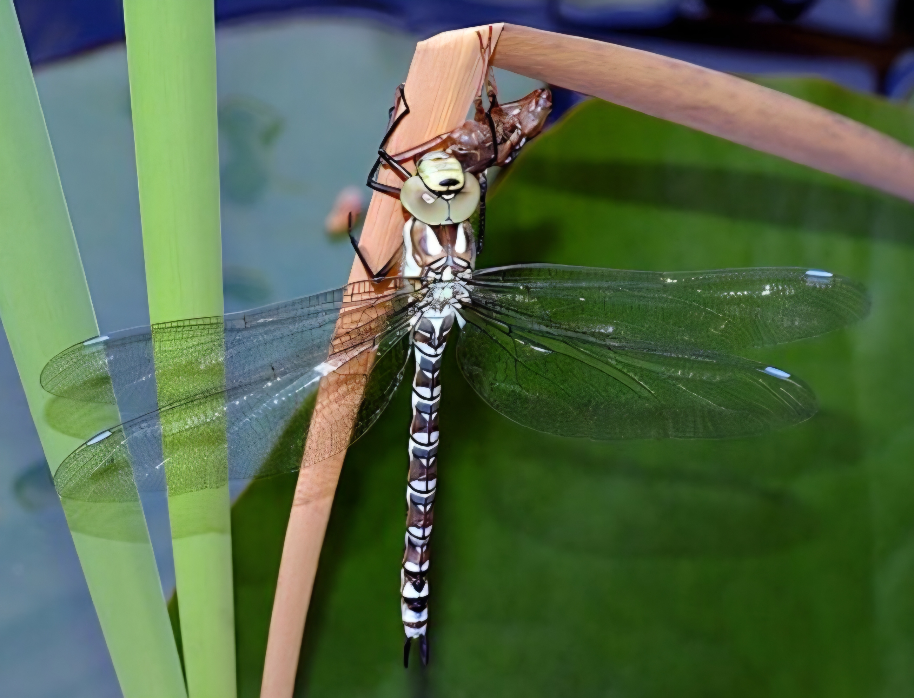
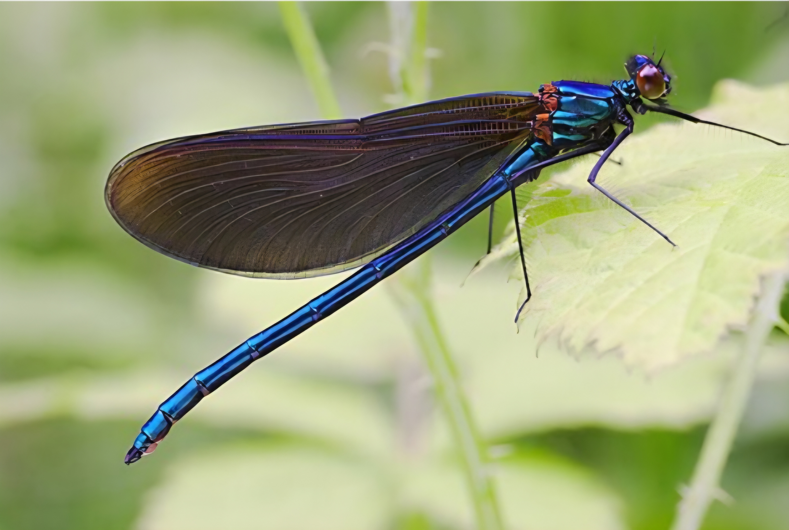

InsectsWaterQuality
昆蟲與水質
位於蘆竹區的富竹賞鳥埤塘（桃園大圳2-18號池） 是以零污染農耕為主軸的生態示範區。 純淨的農業灌溉用水與茂密的水生植被， 造就了極佳的水質條件， 進而孕育出豐富的昆蟲多樣性與活躍的鳥類生態。

蜻蜓
良好的水質與茂盛的挺水、沉水植物， 為蜻蜓提供了理想的棲息與繁殖環境。 蜻蜓幼蟲生活於水中， 因此常被視為觀察水域健康的重要指標生物。

豆娘
豆娘喜歡棲息在植被茂密、 水流穩定的環境中。 豐富的昆蟲群聚， 也成為鳥類的重要食物來源， 形成「農田、埤塘與濕地」 互相串聯的穩定生態圈。
水質與環境
無污染農業： 周邊農田推廣零污染農耕， 避免化學農藥與肥料流入池中， 維持水質的清澈與天然。
植物淨化： 埤塘內的水生植物具備天然淨化功能， 能過濾水中雜質， 保障灌溉與生態用水安全。